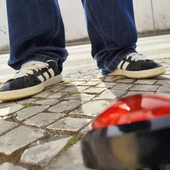

O meu projeto de PAP consiste numa curta-metragem, sobre a reflexão da vida e o medo de crescer, César tem medo de crescer e de aceitar que já não é mais uma criança e tem desejo de parar o tempo, obviamente isso não é possívél, pelo menos não no nosso mundo, então ele encontra um botão, um botão que permite parar o tempo.